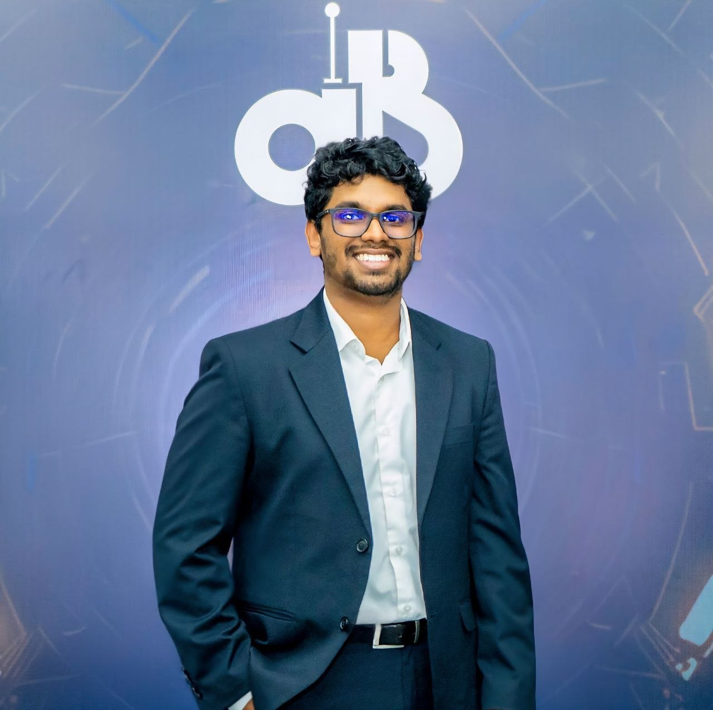

Group Members
- M.T. Firdous
- J.D.T. Perera
- S.M.O.T. Samarakoon
Group G18 Engineering Project Portfolio
Department of Electrical and Electronic Engineering, University of Peradeniya.

Personal Introduction
I am Thaariq Firdous, a 3rd-year undergraduate in the Electronic Engineering Department of the University of Peradeniya. My technical interests and focus include machine learning, computer vision, and embedded systems development.
Project
This project explores methods for analyzing satellite imagery taken at different times to identify structural or environmental changes. By evaluating various computational techniques, the goal is to develop a functional system capable of highlighting significant differences in a given area. This work provides a general framework that can be used to observe evolving landscapes, urban developments, or environmental shifts over time.
Team & Supervisors
Prof. Roshan Godaliyadda
Dr. Shyamantha Subasinghe
Department of Geography, Faculty of ArtsProposed Timeline
Literature review and problem definition
Review of existing pipelines and benchmarking framework design
Deliverable: Literature Review and Initial Setup - Summary of background research and initial framework, plus implementation of the experimental pipeline
Implementation of the experimental pipeline and initial model evaluation
Data analysis and behavior assessment of baseline models
Consolidation of benchmark findings
Deliverable: Mid Project Progress Update - Overview of early testing results and planned direction, plus architectural design
Development of core feature extraction and comparison modules
Implementation of system refinement and representation modules
Deliverable: Initial Project Prototype - Working draft of the core system, plus component integration
Model training and performance evaluation
Deliverable: Final Project Submission - Completed project model and final summary report